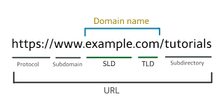

it is also know as "DNS" , it enable users using the internet to discover website using human readable format. it is also known as a standard protocol.
this includes:
County code Top level Domain;
this domain are used in different countries but it's is not acceptable for a user to accept it
Generic Top level Domain:
it is also known has the (gTLV) .
Second Level Domain
this domain is below the Top level Domain (TLDs)
it is linked with the tip level Domain
Third level Domain
This domain is below the second Level Domain
it should aling with the website
Go for something easy(common) first an , Fun first
Pick up related Extension
This dot.com ( it provides of the domain website you are working)
this is a commercial site that is used to commercial purpose and activities
.eduEducation this suffix at this is used for and educational sector
.govgovernment . it is used by the federal government of a nation
.orgorganization. it is used in discribing and for a group or large area of an organization
.milmilitary. this suffix is used in arm forces
.ng - Nigeria
.uk - United kingdom
.fr - France
.ca - Canada etc....
it is also know as "DNS" , it enable users using the internet to discover website using human readable format. it is also known as a standard protocol.
this includes
Top level Domain;This domain are hierarchy used domain Examples includes;
.com , .me , .net Etc.....
County code Top level Domain;this domain are used in different countries but it's is not acceptable for a user to accept it
Generic Top level Domain:it is also known has the (gTLV) .
Second Level Domainthis domain is below the Top level Domain (TLDs)
it is linked with the tip level Domain
Third level DomainThis domain is below the second Level Domain
it should aling with the website
Go for something easy(common) first an , Fun first
Pick up related Extension
This dot.com ( it provides of the domain website you are working)
this is a commercial site that is used to commercial purpose and activities .edu
Education this suffix at this is used for and educational sector
.govgovernment . it is used by the federal government of a nation
.orgorganization. it is used in discribing and for a group or large area of an organization
.milmilitary. this suffix is used in arm forces
Some County domain suffix;.ng - Nigeria
.uk - United kingdom
.fr - France
.ca - Canada etc...
This is know as "world wide web" .this is a leading information retrieving service of the internet provide user to vast array of document that are connected to each other by means of hyper text or hyper media links
feature of wwwhyper text media information system
cross-platform
distributed
open standard or open source
use web browser to provide a single
interface for many service
they are basically there (3) components of a web.
first before the domain that something that shows that is the http it is used for communication of the browser
Domain namesecond the Domain path this is main path of your website
the domain is divided into three path;
It is also called path .it tell you the browser of a specific page
Paremeterit is the critical information for the server . it is used to confused human user
Anchorthis is used to scroll an load a particular page